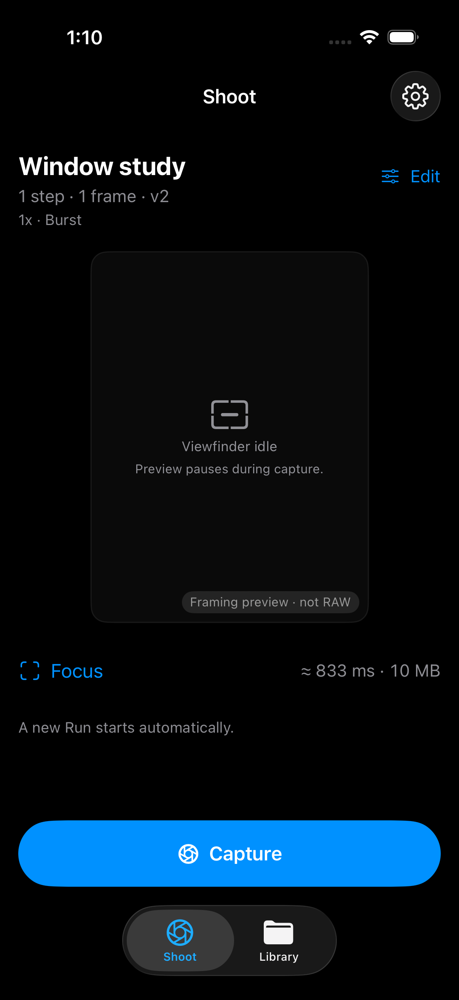
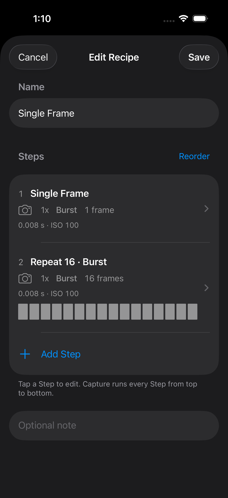
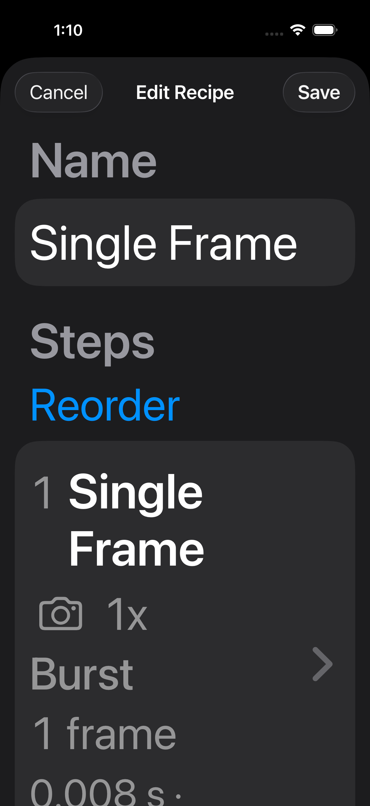

Clearer controls. The same capture precision.
Refined with Impeccable and Taste: explicit editing actions, ordered Steps you can scan, and exact camera-adjusted values close at hand. These are real simulator renders of the app.
Shoot
A labelled Edit action and one primary Capture control.

Ordered Steps
Camera, firing, frame count and exposure values; Reorder and Add Step stay beside the work.

Larger text
The header adapts instead of squeezing its actions into a narrow column.
